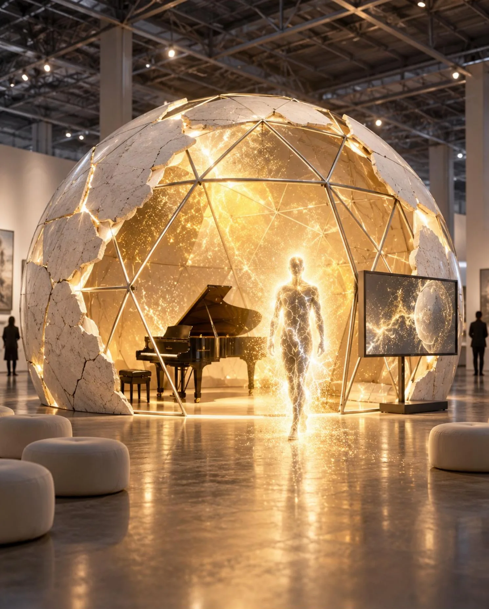
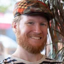

Core idea
Attention becomes visible.
Signals from the participant are translated into an evolving artistic environment. The data does not become a diagnosis; it becomes material for composition, image and encounter.
Ecology of Attention is a live artistic system in which piano, sensory data and responsive visuals turn subtle shifts of attention into a shared spatial experience.

Ecology of Attention explores how minimal changes in rhythm, focus and sensory input can alter a participant’s perception of a live artistic situation. The project combines live piano performance with compact biosensing, real-time software and responsive visualisation. Rather than measuring attention as a score, the system treats attention as a changing relation: between a person, a sound, a space and the surrounding audience.
Signals from the participant are translated into an evolving artistic environment. The data does not become a diagnosis; it becomes material for composition, image and encounter.
The musical layer reacts to the participant in real time, making listening and embodied presence part of the work itself.
Each session can result in a unique visual artefact, short video and data-based archive that extends the live moment into an exhibition layer.
The project is developed as an interdisciplinary collaboration between performance, production and computational media.
Initiator and artistic lead. Develops the live performance language, participatory format and the project’s research into attention, embodiment and agency.
lenasloss.comShapes the curatorial framework, production logic and public-facing structure of the project, connecting artistic research with exhibition and partnership contexts.

Develops the interactive technical layer, real-time software logic and data-to-visual translation that connects sensor input to the adaptive environment.
gizmostudios.netCurrent development is grounded in presentation, testing and pilot environments in the Netherlands.